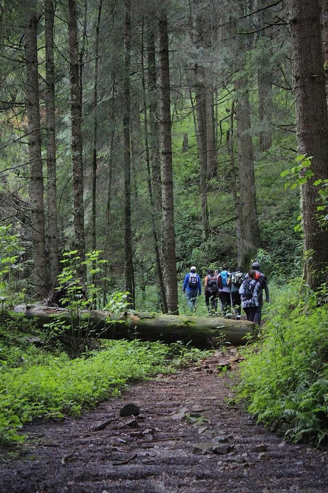
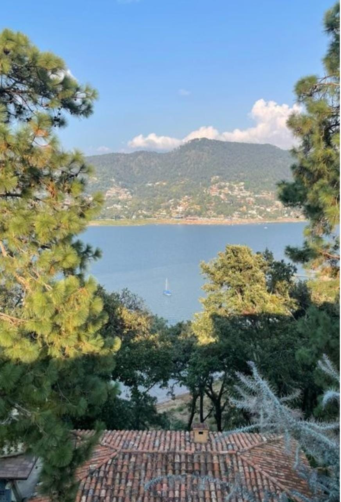
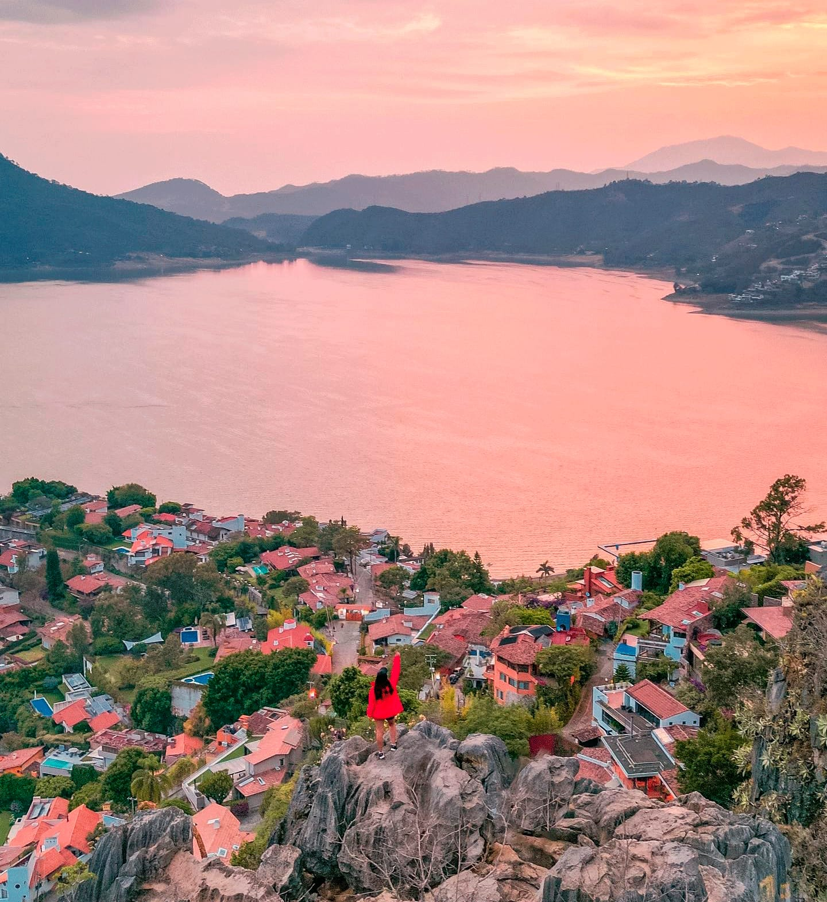

Los Bosques de Valle de Bravo cubren las montañas que rodean el Lago Avándaro, en el occidente del Estado de México. Dominados por pinos, encinos y oyameles (Abies religiosa), estos bosques templados se elevan entre los 1,800 y 3,600 metros sobre el nivel del mar y forman parte del Área de Protección de Recursos Naturales de las cuencas de los ríos Valle de Bravo, Malacatepec, Tilostoc y Temascaltepec.
Su mezcla de agua, montaña y arboleda densa los convierte en uno de los pulmones verdes más visitados cerca de la capital del país.
Cada invierno, entre noviembre y marzo, en bosques de oyamel cercanos millones de mariposas monarca que viajan desde Canadá y el norte de Estados Unidos pueden observarse desde los límites del Municipio de Valle de Bravo.
Ver los árboles cubiertos de monarcas, como flores vivas suspendidas en el aire, es una de las experiencias naturales más impactantes de México.

Valle de Bravo se distingue por su lago rodeado de montañas arboladas, perfecto para deportes acuáticos como kayak, vela, esquí acuático y paseos en lancha o yate.
Los amantes de la adrenalina pueden disfrutar de parapente y ala delta desde el Cerro de la Cruz, que ofrece vistas panorámicas del pueblo y el lago, el Parque Estatal Monte Alto cuenta con más de 20 km de senderos para caminatas, ciclismo de montaña y paseos a caballo, además de áreas para acampar y vuelos en parapente,también se pueden explorar cascadas como Velo de Novia hogar de mariposas monarca durante su migración.

La Peña de Valle de Bravo es un enorme peñasco con vista al pueblo y al lago.
Alcanza cerca de 3 mil metros sobre el nivel del mar, fue habitado desde la época prehispánica por los matlatzincas y hoy es uno de los puntos panorámicos más espectaculares de la zona.
La caminata hasta la cima es relativamente corta, pero con algunos tramos de pendiente que hacen que la recompensa valga todavía más la pena. Conforme se asciende, el bosque comienza a abrirse hasta que aparece una vista de 360 º donde el lago, el pueblo y las montañas forman una postal difícil de olvidar. En lo más alto, se encuentra una gran cruz que se ha convertido en uno de los símbolos del sitio y en el punto perfecto para tomar fotografías al amanecer o durante el atardecer, cuando el sol pinta de tonos dorados el espejo de agua.
